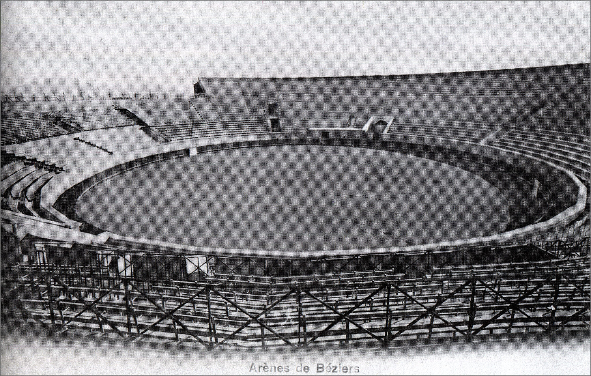
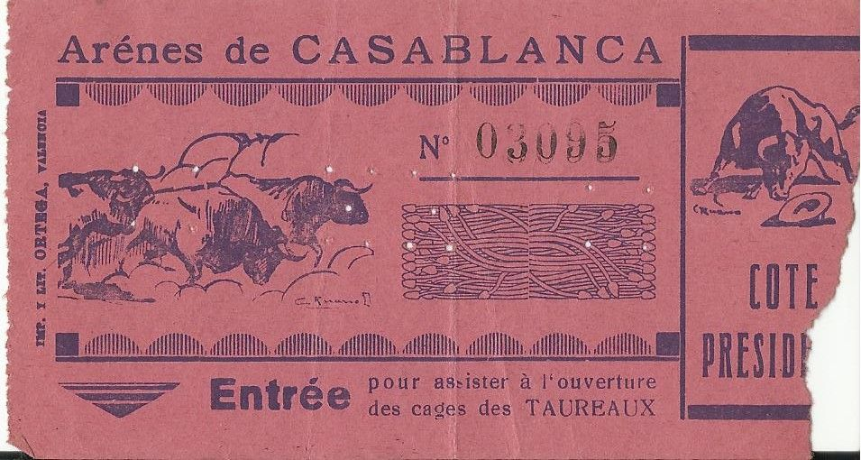

Les arènes de Casablanca ont vu le jour en 1921, sous l’impulsion de la
famille Castella, des Espagnols établis au
Maroc. Construites en seulement 80 jours par l'architecte français Alexandre Cormier, elles
étaient destinées à devenir
un haut lieu de la tauromachie.
ظهرت حلبات الدار البيضاء إلى الوجود في عام 1921، بدفع من عائلة
كاستيلا، وهي عائلة إسبانية استقرت في المغرب. تم بناؤها في
80 يومًا فقط من قبل المهندس المعماري الفرنسي ألكسندر كورمييه، وكانت مخصصة لتصبح مكانًا هامًا
لمصارعة الثيران
ⵍⴰⵔⴰⵏⴻⵙ ⴷ ⵓⵛ ⵏ ⵇⵇⴰⴳⵣⵣⴰⴱⴰⵢ⵰ ⵍⵉ ⵓⴼⴼⴰⵍ ⴷ 1921 ⴷⵏ ⵜⴰⴳⴳⴰⵔⵜ ⵓⵛ ⵏ ⴰⵎⵎⵓⵔⵉⵖⴻⵏ
ⵇⵇⴰⵙⵜⵉⵍⴰ ⵏⵢⴰⵎⵎⵓⵔⵉⵖⴻⵏ ⵓⵎⵔⴰⴳ. ⵉⴼⴼⴻⵙⵙⴰⵏ ⴷ 80 ⵄⵔⵓ
ⴰⵢⵉⴷⴻⵏ ⵏⵉ ⵓⴳⴳⴰⵔⴻⵏ ⵉⵏⵛ ⵍⵢⵓⵏ ⵉⵙⴻⵏⴰⵓ ⴰⵙⴻⵏⴳⵉⵍ ⴳⵍⴻⵎⵉⵣⵖⴻⵏ ⴳⴳⴰⵢ ⵏⴳⵍⵓⴽ ⵓⵙⵙⴻⵏⴳⵉⵍⵉ ⴳⵍⵉⵏⵎⴻⵢ
ⵏⵜⴰⵡⵔⵓⵎⴰⵛⵉⵢⵢⴰ.

Inaugurées en grande pompe en octobre 1921 par le futur Maréchal Lyautey,
les arènes ont rapidement attiré les foules
pour des corridas et autres spectacles taurins. Avec une capacité de 12 000 places, elles
ont marqué le début d’une ère
festive pour Casablanca.
افتتحت الحلبات بفرح كبير في أكتوبر 1921 من قبل المارشال المستقبلي
ليوطي، وجذبت بسرعة الحشود لمصارعة الثيران والعروض
الترفيهية الأخرى. بقدرة استيعابية تصل إلى 12,000 مقعد، كانت بداية لعصر احتفالي في الدار
البيضاء.
ⵜⴰⵏⵓⵖⵓⵔⴰⵜ ⵉⵏ ⵉⴳⵔⴰ ⵜⵉⵏ ⵓⴽⵜⵓⴱⵔ 1921 ⵏ ⵜⴰⵎⴰⵔⵛⵉⵍ ⵍⵢⵓⵜⵉ ⴷ ⵉⵙⵎⵉⵙ ⵜⴰⵎⴳⴷⵉⵡⵜ
ⵉⵏⴰⵎⵓⵏⵙ ⵜⵉⵎⵙⵎⵔⵉⵜ ⵉⵏ ⵜⵓⵔⵉⵜ ⵜⵉⵍⵍⴰⵢⵜ ⵉⵙⵏⴰⵓ
À partir de 1953, sous la direction de Paul Barrière et Don Vicente
Marmaneu, les arènes ont connu leur apogée. Les plus
grands toreros, tels que Paco Camino et El Cordobès, ont foulé le sable des arènes, faisant
vibrer les aficionados
casablancais.
ابتداءً من عام 1953، تحت إدارة بول باريير ودون فيسنتي مارمانيو،
شهدت الحلبات ذروتها. أكبر مصارعي الثيران، مثل باكو
كامينو وإل كوردوبيس، وطأوا رمال الحلبات، مما أثار إعجاب عشاق مصارعة الثيران في الدار
البيضاء.
ⴰⴱⵜⴰⴷⴷ ⵏ ⴰⵢⵓⵙ 1953، ⵙ ⵜⴰⵏⴳⵓⵔⴰⵜ ⵏ ⵓⵎⵓⵔ ⴱⴰⵍ ⴱⴰⵔⵉⵢⴻ ⴷ ⴷⵓⵏ ⴼⵉⵙⴻⵏⵜⵉ ⵎⴰⵔⵎⴰⵏⴻⵓ،
ⴰⵎⴳⵉ ⵍⴰⵔⴻⵏⴻⵙ ⴷ ⴳⵍⵍⵉⵎ. ⵉⴳⴷⴰⵔⴷⴻⵏ ⵜⵓⵔⵉⵙⵜⴻⵏ
ⵜⵉⵏⵉⵣⵉⵙⵏ، ⵜⵉⵣⵉ ⴱⴰⴽⵓ ⴽⴰⵎⵉⵏⵓ ⴷ ⴻⵍ ⴽⵓⵔⴷⵓⴱⴻⵙ، ⵉⵍⵍⵎ ⵜⵉⵏⵜⵜⵍⴰⴷⵜ ⵉⵙⵏⴰⵓⵙ ⵉⴼⴻⵛⵉⵏ ⵏ ⵇⵇⴰⴳⵣⵣⴰⴱⴰⵢ⵰.

Outre les corridas, les arènes sont devenues une scène prestigieuse pour
des concerts de légendes comme Ray Charles et
Dalida, ainsi que pour des événements sportifs comme les courses de stock-car et les combats
de boxe, élargissant ainsi
leur audience.
إلى جانب مصارعة الثيران، أصبحت الحلبات مسرحًا مرموقًا للحفلات
الموسيقية لأساطير مثل راي تشارلز وداليدا، وكذلك للأحداث
الرياضية مثل سباقات السيارات القوية ومباريات الملاكمة، مما وسع جمهورها.
ⵉⵍⵍⵉ ⵜⵉⵏⵜⵜⵍⵍⴰⵢⵜ ⵜⴰⵏⴰⵢⵢⵔⵜ، ⴰⵎⴳⵉ ⵍⴰⵔⴻⵏⴻⵙ ⵜⴰⵙⵓⵙⵏⵜ ⵜⵙⵙⴻⵔⵢⵢⵉⵏ ⵙⵙⵎ ⵏ ⵜⴰⴳⵍⵉⵣⵏⵉⵏ
ⵉⵏⵣⵣⴰⵎⵉⵏ ⵙ ⵔⴰⵢ ⵛⴰⵔⵍⵙ ⴷ ⴷⴰⵍⵉⴷⴰ، ⴷⵉⵙ ⵉⵜⵜⵔⵉⵏ
ⵜⴰⵎⵔⵉⵜⵉⵏ ⵜⴰⵏⵓⵡⵔⵉⵜ ⵜⴰⵟⵉⵟⵉⵏⵉⵜ ⵉⵏⵜⵜⵉⴷⵓⴷⵉⵏ ⵏ ⵉⵙⴽⴰⵎ ⵙⴽⴽⴰⵎ ⴰⵛⵔⴰⵔⵉⵏ ⴷ ⵜⵔⴳⵉⴷⵉⵏ ⵏ ⵠⵓⴽⵙⵉⵏⵉⵏ، ⵉⵜⵜⴰⴷⵍⵉⵏ
ⵜⵉⵏⵜⵜⴰⴼⵍⵜ ⵉⵎⵉⴷⵉⵏ ⵏ
ⵜⵙⵉⵎⵉⵎⵉⵏⵜⵜⵉⵏ ⵓⵎⵉⵏⴷⵜⵉⴷⵏ.

Malheureusement, la mort de Don Vicente Marmaneu et la pression
immobilière ont conduit à la démolition des arènes en
1971. Aujourd’hui, le souvenir de ces moments glorieux demeure vivace dans la mémoire
collective des Casablancais.
للأسف، أدت وفاة دون فيسنتي مارمانيو والضغط العقاري إلى هدم
الحلبات في عام 1971. اليوم، لا يزال ذكرى هذه اللحظات المجيدة
حاضرة في الذاكرة الجماعية لسكان الدار البيضاء
ⵉⵣⵉⵣⴻⵍⵉ ⵏⵏⴰⵢ، ⵉⵜⵜⴻⴷ ⵜⵓⵥⵥⴰⵜ ⵏ ⴷⵓⵏ ⴼⵉⵙⴻⵏⵜⵉ ⵎⴰⵔⵎⴰⵏⴻⵓ ⴷ ⵜⵓⵔⵉⵙⵢⵉⵜ ⵜⴰⵏⵏⵉⵙⵜⵉⵒⵉⵜ
ⵜⴰⵢⵉⵙ ⵏⴰⵎⵜⵜⵔⴰ ⵍⴰⵔⴻⵏⴻⵙ ⵉⵏ 1971. ⴰⵎⵣⵉⵔⵉⵢ ⵉⵜⵜⵓⴳⴳⴰ
ⵏ ⵜⵉⵎⵉⵖⵓⵔⵜ ⵜⴰⵟⵟⵉⵜⵜⴰⵡⵜ ⵜⴰⵏⵜⵜⵉⵎⵓⵔⵜ ⵏ ⴰⵎⵎⵓⵔⵉⵖⴻⵏ ⵏ ⵇⵇⴰⴳⵣⵣⴰⴱⴰⵢ⵰.